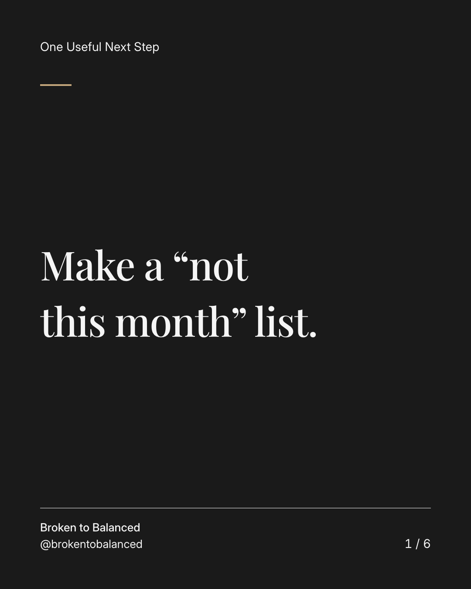
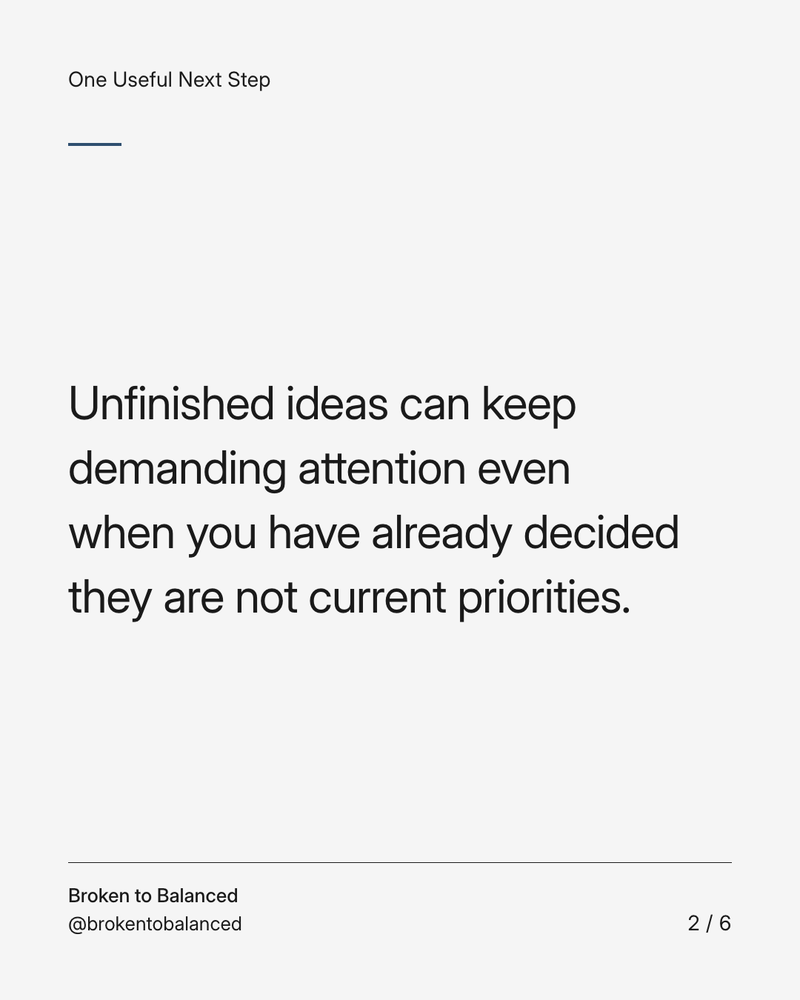
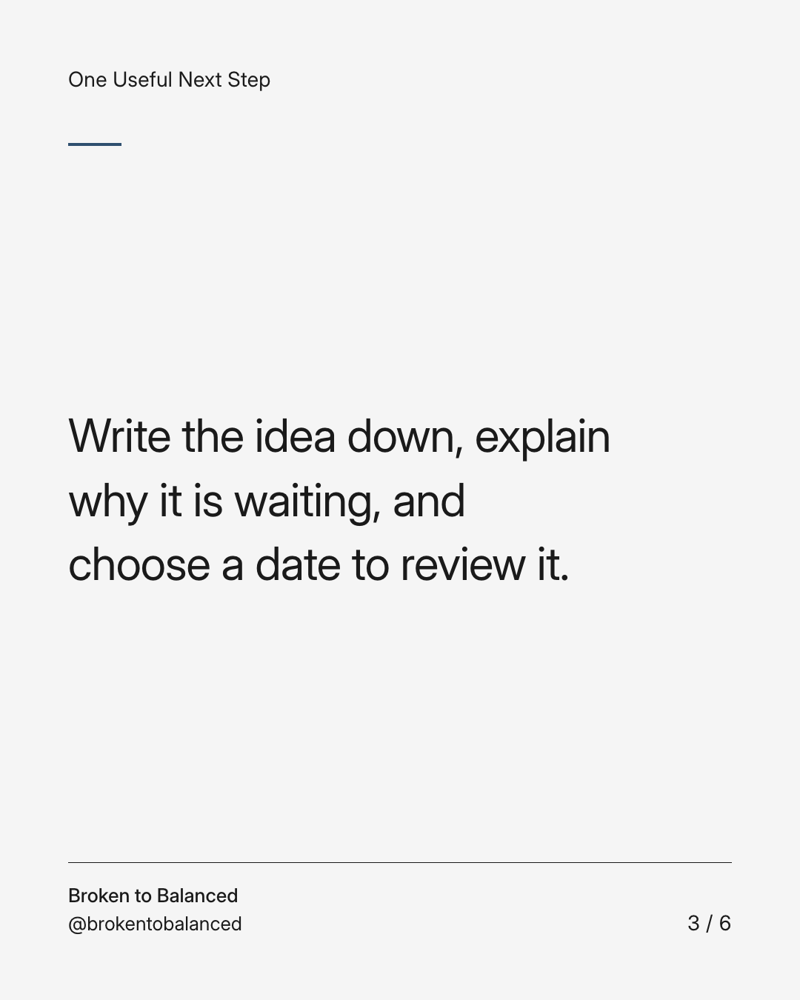
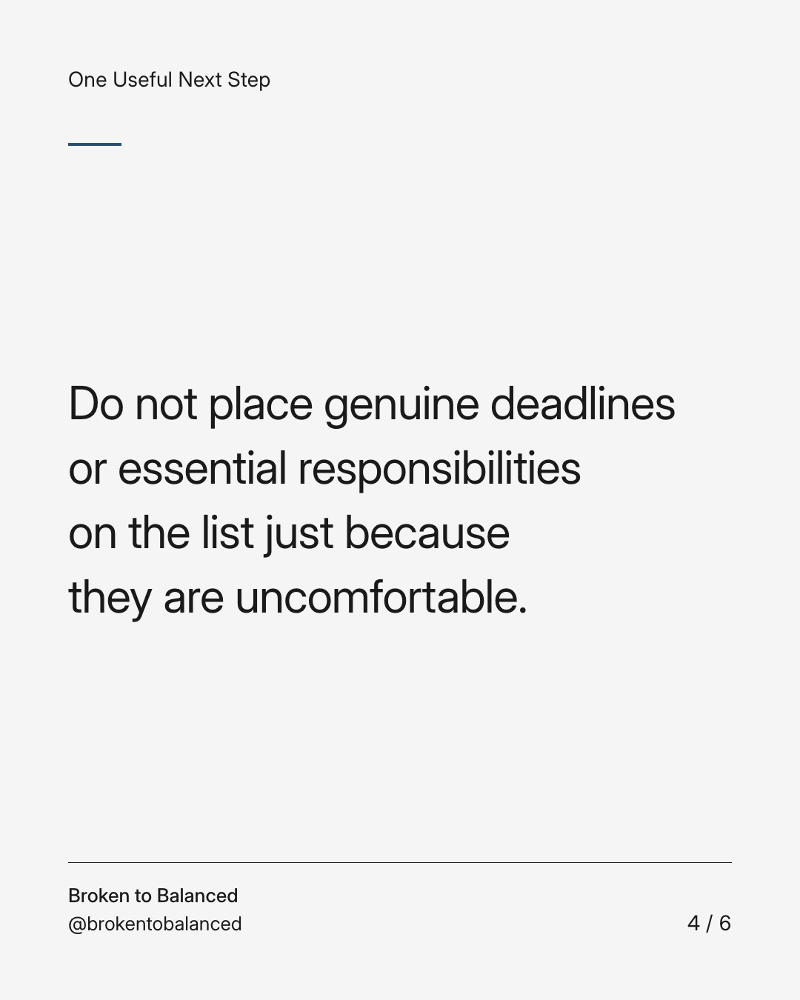
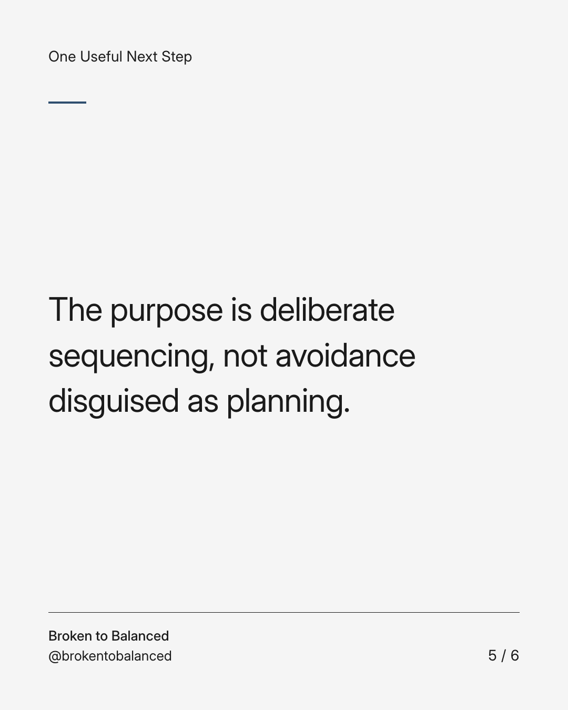
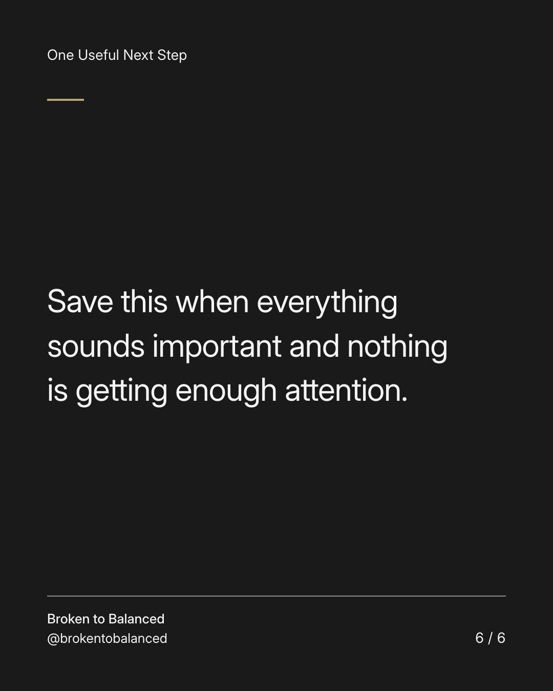

Exact text and accessibility text
Make a “not this month” list.
Slide 1 of 6. Make a “not this month” list.


Exact text and accessibility text
Unfinished ideas can keep demanding attention even when you have already decided they are not current priorities.
Slide 2 of 6. Unfinished ideas can keep demanding attention even when you have already decided they are not current priorities.


Exact text and accessibility text
Write the idea down, explain why it is waiting, and choose a date to review it.
Slide 3 of 6. Write the idea down, explain why it is waiting, and choose a date to review it.


Exact text and accessibility text
Do not place genuine deadlines or essential responsibilities on the list just because they are uncomfortable.
Slide 4 of 6. Do not place genuine deadlines or essential responsibilities on the list just because they are uncomfortable.


Exact text and accessibility text
The purpose is deliberate sequencing, not avoidance disguised as planning.
Slide 5 of 6. The purpose is deliberate sequencing, not avoidance disguised as planning.


Exact text and accessibility text
Save this when everything sounds important and nothing is getting enough attention.
Slide 6 of 6. Save this when everything sounds important and nothing is getting enough attention.
Exact caption
Plain-text fallback: select and copy the caption.